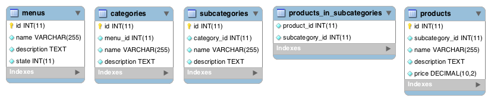

Database design
During all the phases of the project the database changed a lot. The least amount of tables was 5, the largest amount 9. Some had foreign keys, others didn't. In this section the differences and choices that were made are found.
Version 0.1
Version 0.2

Version 0.3 and 0.4